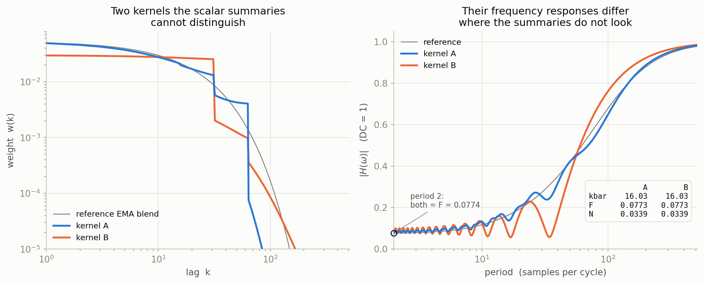

Toward a principled theory of momentum
Research memo · 29 August 2026
We want a momentum rule whose temporal weighting follows the optimizer's measured state instead of a hand-designed training schedule. The central question is which property of recent gradient history should control that weighting.
Working hypothesis. In Muon, the useful state describes how gradient variation at different time scales is oriented within each weight matrix. Momentum changes the relative influence of those directions before the matrix-sign step.
1. Scheduling explains part of the K-Maxwell gain
Scheduling the decay of one exponential moving average (EMA) of past gradients recovers about one third of the validation-loss improvement of K8—an eight-EMA K-Maxwell mixture—over bi-Maxwell, the matched two-EMA control. K6, the six-EMA mixture, and K8 are too close to distinguish in a single-seed discovery comparison, so these runs provide no resolved benefit from the extra two summaries.
The comparison varies two freedoms in temporal weighting. Scheduling one EMA changes its memory length during training. K-Maxwell instead maintains several EMA summaries with different decay rates and schedules their mixture weights.

The remaining endpoint gap has three coupled sources: the temporal weights used at the end, the gradient summaries stored in the momentum buffers, and the model parameters produced by the preceding updates. Each can contribute to K8's lower validation loss. Endpoint training runs therefore establish that scheduling helps and leave the additional K-Maxwell gain causally unassigned.
2. Temporal weighting can become direction selection
The mechanism hypothesis is that different time scales occupy different matrix directions. Ideal matrix sign removes a common positive multiplier from its input, so temporal weighting matters when it changes the relative mixture of those directions.
A two-component local model is enough to expose the mechanism:
Here ctslow and ctfast are slow and fast scalar variations measured over a chosen window, while Aslow and Afast are their matrix directions. In the proposed measurement, these objects come from a finite-window Fourier projection of the observed gradient matrices; the exact estimator is in Appendix F.
For one harmonic component at frequency ω, write
We suppress the window endpoint in Aω and assume that this local coefficient is approximately stationary over the kernel's effective memory. Applying temporal weights wk gives
The minus sign in H comes directly from the delay: replacing t by t − k subtracts the phase ωk. Thus H(ω) gives both the amplitude change and phase shift applied to that component.
With two measured components whose matrix coefficients point in different singular directions, the matrix presented to Muon is
The kernel changes Muon's direction through relative component weights. Muon takes , and ideal matrix sign satisfies , so common scale disappears. Changing the temporal weights changes the complex ratio . That ratio changes how much each matrix direction contributes to Zt and can rotate Pt.
The candidate state for adaptive momentum is therefore a time-scale-to-direction map: which temporal bands contribute to which matrix directions, and how a candidate weighting would rotate the resulting Muon update. Whether this map predicts useful rotations is an empirical question.
3. Curvature constrains the theory
The fixed-learning-rate runs show curvature pinning: once a run settles, its median leading curvature is higher at smaller learning-rate multipliers. Each point below summarizes a separate trajectory by taking the median over its Muon-managed matrices. The five accepted segments fit . Here s is the learning-rate multiplier and λ̃ is each matrix's leading curvature divided by its step-1000 value; the ordinary inverse-multiplier reference has slope −1.

The median is unusually smooth because it averages over different matrix-level laws. Most Muon-managed matrices individually follow a tight power law in the learning-rate multiplier, but their slopes and vertical levels differ by much more than the estimated measurement noise. Their deviations lie on both sides of the median and largely cancel there.

attn.proj, mlp.proj, and
proj.weight refer to three different matrices. Each colored
point is one residual-block matrix; the two black-dot panels contain the
single embedding and output matrices. Curvature is normalized by each
matrix's step-1000 value. The solid line repeats the aggregate −1.28 fit
and the dashed line has slope −1. Hollow or visibly isolated points reflect
weakly settled estimates; such cells occur throughout the network. The
embedding fit is especially unreliable because adjacent-checkpoint spikes
reach 15×.Training progress appears to move individual matrices without changing the aggregate inverse-learning-rate law. The aggregate exponent was reproduced at a later checkpoint, while individual matrices measured at different stages shifted together; deeper blocks tended to move higher. Matrices measured at nearly the same training step agreed much more closely. The aggregate law survives because the matrix-level shifts largely cancel in the median.

Near-matched matrix gaps also reproduced across checkpoints, revealing a stable matrix-identity component beneath the slower drift. The measurement-step pattern suggests training-progress drift but does not establish it. Comparing early and late windows within the existing runs can test this interpretation without additional training.
Matrix type and block depth capture some structure but do not predict held-out absolute curvatures to the measurement floor. Removing the step-1000 normalization from the analysis leaves the same heterogeneity. Allowing each matrix its own exponent and level performs much better, yet still misses the estimated measurement floor and cannot predict an unseen matrix. Within each measured state, the current data therefore support matrix-specific power laws, with the variables controlling their slopes and levels still unidentified. Any predictive law must account for both the reproducible matrix-identity component and its drift over training.

The recorded variables do not yet predict the matrix-specific laws accurately. Matrix type, depth, shape, initial curvature, and raw-gradient norm leave large held-out errors and fail to explain the fitted constants to the measurement floor. Near-matched matrix pairs also exhibit clearly different fitted slopes or levels, so a smooth rule built from those fields is insufficient. The proxy tests also expose a gap in the instrumentation: the logs contain the raw gradient's norm and polar direction, while the candidate theories concern the scale and polar direction of the temporally filtered momentum matrix.
The next measurement should resolve a candidate state at the same per-matrix and training-time granularity: the singular values and directions of the momentum matrix before matrix sign, separated by the temporal components that produced it. This momentum spectrum is the time-scale-to-direction map proposed in Section 2. It could record both matrix identity and slow drift, but has not yet been shown to explain the curvature laws.
The fitted slope supports only a normalized trend comparison, not an absolute SGD threshold. An overlay of the rule ηλ = 2 requires physical learning-rate and curvature units. Here the horizontal coordinate is a multiplier on the base step size, and the vertical coordinate is a median of separately normalized per-matrix curvatures, so the plot supports a slope comparison.
A one-dimensional quadratic shows how a temporal kernel moves the classical period-two stability boundary. Let xt be the displacement along one Hessian eigenvector of physical curvature λ, let η = sη0 be the physical step size, and let ρ be the decoupled weight-decay coefficient. Setting Muon's matrix-sign operation aside gives the scalar momentum update
This linear recurrence is stable when every characteristic root lies inside the unit circle. A period-two boundary is the part of that boundary where the first root reaches r = −1, so a perturbation alternates sign without shrinking. Dividing every delayed coordinate by xt removes the parity of t:
For ordinary gradient descent, w0 = 1 and a = 1, recovering ηλcrit = 2. For a general temporal kernel, the inverse-F prediction applies only when period two is the first mode to become unstable.
This equation makes two experimentally distinct predictions. First, hold the kernel fixed and vary the learning rate. The scalar boundary is λcrit = (2 − ηρ)/(ηF), which is approximately proportional to 1/η when ηρ is small. The runs above all use the same bi-Maxwell kernel, and hence the same F, but their post-fork trajectories are not held at the same state. They provide a descriptive slope comparison: the aggregate slope is close to −1, while the resolved deviation and differences among matrices require a richer empirical law.
Second, hold the learning rate and training state fixed and vary F: the critical curvature should scale as 1/F. This is why F is useful. It is the kernel's response to a sign-alternating gradient, and it is the only property of the kernel that enters the period-two boundary. The current runs do not test this prediction because changing the kernel also changed the stored momentum and the model trajectory. The matched-kernel intervention of Section 4 would test it directly.
Muon adds a directional complication: matrix sign removes common scale, but reweighting temporal components can rotate the matrix before that operation. The available momentum-free comparison cannot test the F prediction. It was measured late, after alternating energy had faded, and it changed the optimizer, stored history, and model trajectory together. Its details are in Appendix C.
4. Proposed experiment: are three kernel summaries sufficient?
This experiment decides which of two momentum-design programs is worth pursuing. It tests whether three numbers contain all the useful information in a temporal kernel: mean lag, the average age of the gradients it uses; alternating response F, the surviving amplitude of a gradient that flips sign every step; and white-noise gain, the output variance produced by independent unit-variance gradients.
Momentum design reduces to choosing their trajectories over training. The present raw-gradient plus EMA family is already a minimal implementation: two or three EMA streams matched to K8's three-number trajectory should recover its gain. We build that compressed schedule and stop treating kernel shape as a design variable.
Two kernels can agree on all three numbers yet produce different useful updates. Kernel shape is then a genuine control dimension. We retain the short ring-buffer components used by this test and search for the measured training state that predicts which shape helps.
A comparison inside the current family cannot decide between these branches. Once constant-gradient response, mean lag, F, and white-noise gain are fixed, a nonnegative mixture of the current gradient and EMA streams is essentially unique. The smallest enlargement that creates two distinct matched kernels adds short moving averages, implemented with a bounded ring buffer.

The displayed kernels differ only in how they distribute weight across gradient ages after the four scalar constraints are imposed. The pair is re-solved for the finite gradient history available at each checkpoint; Appendix G gives the construction and numerical tolerances.
Same model, stored gradient history, next batches, and learning-rate schedule
Apply each matched weighting to that common history
Compare the immediate update, then loss and curvature over a fixed continuation
The null is plausible, especially late in training: the kernels differ materially only over periods 16–40, where gradient energy has decayed, and any remaining energy may lie in directions that do not compete for the momentum matrix's leading singular subspace.
Three checkpoints test early, middle, and late training. At each one, matrix cosines and leading-singular-subspace angles measure how much the two Muon updates differ. Two duplicate controls—independent continuations using the same kernel, checkpoint, and data order—measure the small divergence caused by GPU arithmetic. Their difference is the control floor: a kernel effect counts as resolved only when it is larger. The pre-sign momentum spectrum records the singular values and singular directions of the temporally weighted gradient matrix before Muon's matrix-sign operation, together with each time scale's contribution. It shows how a change in temporal weighting becomes a change in update direction. Fixed continuations then test whether a resolved update difference produces a loss or curvature difference larger than its duplicate-control floor.
Classify the result sequentially: first ask whether any update angle clears its control floor; only then count checkpoints where both that angle and a downstream effect clear their floors.
| Observation | Conclusion | Decision |
|---|---|---|
| No checkpoint has an update angle above the duplicate-control floor. | This pair reveals no missing temporal effect over the tested states. | Repeat with one independent pair; if it also fails, build the compressed EMA schedule. |
| An angle clears its floor, but no checkpoint clears both angle and downstream floors. | The remaining kernel structure changes the update without a detectable short-window consequence. | Do not retain shape as a design variable without a longer-horizon effect. |
| Exactly one checkpoint clears both angle and downstream floors. | The useful temporal weighting depends on training state. | Retain the ring-buffer family and identify what is special about that state. |
| Two or more checkpoints clear both angle and downstream floors. | The matched summaries omit a reproducible, consequential feature. | Retain the ring-buffer family and fit the smallest state-conditioned shape rule. |
If the matched pair establishes that shape matters, candidate kernels are selected without a training sweep. At a shared checkpoint, recorded gradient history constructs each candidate update; fresh minibatches score the true loss change from one complete deployed virtual step, and disjoint batches evaluate the winner. A third-order Taylor decomposition is computed once for the winner and its matched partner: a cubic term that indicates sharpening triggers one curvature-penalized re-solve. In every case, the fixed continuation—not the one-step score—decides whether the selection was useful. Section 5 gives the equations and the rule for compressing a successful selector.
A separate early-training fork tests the scalar stability theory. Between steps 1500 and 2000 the gradients still contain substantial period-two oscillation, so changing F while matching constant response, mean lag, and white-noise gain directly tests Section 3's prediction that critical curvature scales as 1/F. The late momentum-free run could not perform this test because its period-two energy had already vanished.
Decision requested. Approve the three-checkpoint matched-kernel response map (0.5 aggregate GPU-hours) and its fixed continuations (1.5 aggregate GPU-hours). Together they decide whether to build the compressed EMA schedule or retain kernel shape as a control dimension. The independent early F-fork costs 2 aggregate GPU-hours and tests the scalar stability mechanism.
5. Proposed program: from measurement to a small controller
A controller is justified only if measured state predicts which temporal weighting helps. Its candidate state qt combines three signals motivated by the measurements above with the exact loss-decrease boundary for the deployed update.
Learning rate and measured curvature track proximity to the inverse-learning-rate pinning law.
Per-matrix curvature records the stable identity component and slow drift found in Section 3.
EMA projections into the pre-sign singular basis measure each time scale's matrix contribution.
marks where the deployed step stops decreasing loss. Here gt is the current gradient and Δt is the actual parameter change, measured in the optimizer's update norm.
Given this state, choose kernel weights by measuring the loss after one virtual optimizer step. For kernel weights w, define Zw = ∑kwk Gt−k and Pw = msign(Zw) and . The virtual step runs the deployed update, including its shape factors, weight decay, finite Newton–Schulz iteration, and numerical precision. The recorded gradient history constructs Pw; it never includes the fresh batches used to score the step. The feasible set 𝒲 contains combinations representable by the EMA bank, normalized to unit constant response and capped in white-noise gain so the search cannot buy alignment by amplifying gradient noise.
Each score subtracts the pre-step loss on the same batch, reducing sampling noise. A small set of batches selects w*; disjoint batches estimate its error bar and compare it with duplicate-control divergence.
At the selected kernel and its matched partner, decompose the local loss change once:
The three terms measure gradient alignment, curvature along the update, and the change of that curvature along the step. The cubic derivative is estimated with two finite-differenced Hessian–vector products. A positive cubic contribution warns that a kernel's immediate gain may sharpen the loss surface. If that warning appears, repeat the cheap search once with this term penalized and send both selections to the fixed continuation. Otherwise, add no horizon model. Continuation loss and curvature remain the ground truth; recording the cubic term across candidates will show whether it predicts which local choices survive.
The program advances only when each stage earns the next expense.
- Map the immediate response. The matched pair isolates information beyond the three summaries at early, middle, and late checkpoints; cost: 0.5 aggregate GPU-hours.
- Test training consequence. Fixed continuations connect resolved update differences to loss and curvature; cost: 1.5 aggregate GPU-hours.
- Test scalar stability. The early F-fork decides whether the period-two boundary predicts curvature; cost: 2 aggregate GPU-hours.
- Select the state. Fit qt → w* across checkpoints; held-out update angles and outcomes eliminate useless signals. Replace offline curvature only with an online statistic that predicts the same weights on held-out checkpoints. Cost: 0.5 aggregate GPU-hours per validation rerun.
- Compress and verify. Seed tests on ordinary, high-, and low-learning-rate trajectories retain only the smallest EMA bank that generalizes; cost: 0.5 aggregate GPU-hours per validation rerun before a seed fleet is justified.
Decision requested. Approve the matched-kernel experiment in Section 4 and its fixed continuation window. Defer another power-law fit, broad K-Maxwell tuning, and controller implementation until those measurements identify a reproducible state variable. The roadmap gives the accelerator cost at each gate.
The end state is a minimal EMA bank governed by one measured quantity and exposing at most one user-facing hyperparameter.
Appendices
A. Exact discovery measurements
| momentum rule | validation loss | gain over matched control |
|---|---|---|
| bi-Maxwell control | 3.27547 | — |
| scheduled single EMA | 3.27449 | +0.00098 |
| scheduled K6 | 3.27261 | +0.00286 |
| scheduled K8 | 3.27250 | +0.00297 |
These are matched single-seed discovery runs forked from the same step-1000 state. The scheduled single EMA moves from decay 0.982 to 0.944. Its improvement was +0.00068 in a second stack, so the one-third comparison is an approximate scale.
The bi-Maxwell control uses EMA decays 0.85 and 0.98 with mixture weights 0.4385 and 0.5615 after the step-1000 switch.
A separate scheduled power-law approximation lost to its control, but its realized average lag and alternating/noise responses missed the intended match. That run does not compare kernel families at fixed descriptors.
B. Curvature measurements and evidence limits
The steady points in the figure are (learning-rate multiplier, normalized median curvature) = (0.60, 2.56), (0.77, 1.82), (1.15, 1.147), (1.30, 0.92), and (1.70, 0.675). Two lower-learning-rate runs failed the stated steady-regime criterion and were excluded. The accepted windows were steps 3000–3249, 2500–3000, 2125–2375, 1375–1625, and 1250–1500, respectively; the s = 1.30 window was still drifting downward at its edge.
Curvature is the median leading eigenvalue of each Muon matrix's diagonal Hessian block on a fixed batch, normalized to that matrix's step-1000 baseline. The transient window is 250 steps after a learning-rate raise or the step-1000 kernel switch, and 125 steps after a learning-rate drop. After that window, a segment is accepted when its whole-segment slope in log median curvature is within the length-scaled one-standard-deviation noise floor. All five points use 8-iteration Lanczos with the convergence correction and tail gate. Eight iterations underestimate the leading eigenvalue; the correction extrapolates the remaining gap by assuming geometric decay in successive Ritz-value increments. The tail gate drops matrix estimates whose extrapolated remaining error exceeds 5%. Each point is one segment from one trajectory; its uncertainty describes within-run measurement variation.
The geometric-tail extrapolation and tail gate were
calibrated against 16- and 32-iteration references at early and late
checkpoints. The corrected 8-iteration estimates had zero median bias at
both ages; the change in bias between ages was less than 1% of the reported
curvature drift. The one exception was embed.weight: its late
8-iteration estimate retained a −0.015 log10 under-correction, so
its reported late-age values use 16 Lanczos iterations.
The law ladder fits absolute corrected eigenvalues. L1 uses one exponent and matrix-type levels; L2 adds depth-dependent levels; L3 allows type-specific exponents; L4 adds depth-dependent exponents; L5 gives every matrix its own level and exponent. Model selection uses held-out learning-rate runs, with a separate even-depth to odd-depth test. Fits exclude 81 of 360 Muon-matrix cells whose within-window drift exceeds three estimated standard errors; those cells are distributed across all depths. L5 is a diagnostic ceiling because it cannot predict an unseen matrix.
The recorded-feature check used matrix type, depth, shape, step-1000 curvature, and raw-gradient norm. The near-match test required the same matrix type, a depth difference of at most one block, and step-1000 curvature and gradient norm within 15%. Six such pairs differed by three to nine fitted standard errors in their law constants. This rejects a smooth, low-capacity rule over the tested neighborhoods. The proposed collapses based on raw-gradient scale and curvature along the raw-gradient polar direction were unsupported; the apparent scale relation largely vanished after controlling for the shared step-1000 state. The corresponding momentum-spectrum quantities were not recorded.
A second five-point bi-Maxwell set forked from step 2400. Its aggregate exponent was −1.19 ± 0.10, consistent with the earlier −1.21 to −1.28 estimates. For the two comparisons whose measurement windows differed by roughly 1,500 training steps, per-matrix log-curvature shifts had 0.5–0.7 root-mean-square magnitude, four to six times the pooled noise estimate; their residuals correlated at Pearson 0.73 and Spearman 0.86. The nearly step-matched comparison had a median offset of 0.03 and roughly twice the pooled noise. Fifteen of eighteen near-match gap comparisons agreed within 1.5 standard errors; all exceptions contained an unsettled cell. These observations motivate, but do not prove, the training-progress interpretation in the main text.
The learning-rate multiplier also scales decoupled weight decay in this harness. The full hybrid Muon–Adam update depends on weight-norm adaptation, cross-block coupling, and finite Newton–Schulz effects, so the plot is a descriptive inverse trend. BF16 rounding and the numerical stabilizer also break the exact scale invariance of ideal matrix sign. The intervention uses the deployed implementation.
C. Late-regime momentum-free comparison (diagnostic only)

This screen changes the optimizer, stored history, model trajectory, and weight norms together. It motivates the matched-kernel intervention of Section 4 in the earlier period-two regime and carries no causal attribution to F.
D. Statistical scope
The training comparisons use one seed and one checkpoint fork per candidate, so the one-third decomposition is a scale estimate. Published eight-seed results show gains from scheduled EMA mixtures on different stacks; they do not calibrate this one-seed decomposition. The matched-kernel experiment uses duplicate controls at every checkpoint, and the distilled rule is evaluated across seeds. The momentum-free curvature comparison uses a separate trajectory whose weight norms are about 0.31 times the reference. Kernel selection uses the measured loss of the complete deployed step. The third-order decomposition is diagnostic: it requires a smooth local loss and does not replace the fixed continuation.
E. Full scalar boundary for an arbitrary kernel
Substitute a trial mode xt = rt into the scalar update from Section 3. Dividing by xt gives
For a curvature scan at fixed η and ρ, hence fixed a, the stability boundary is the first root to reach |r| = 1 as λ increases. Setting r = eiφ and scanning φ handles a power law, K-Maxwell, or any other realized finite kernel. The period-two formula in the main text is the φ = π case.
F. Local Fourier measurement
For an L-step rectangular window ending at step t, the complex matrix coefficient at frequency ω is
At a nonzero, non-Nyquist DFT bin ω = 2πq/L, the factor of two gives the amplitude of an isolated real sinusoid. At other frequencies this is a projection convention subject to finite-window leakage. The experiment registers L, window shape, frequency bins, and normalization before comparing candidate temporal kernels.
G. Matrix-direction readout
At checkpoint t, truncate each kernel to the available history and compute its constant response, mean lag, alternating response, and white-noise gain as
The deployed family is a nonnegative mixture of the current-gradient term and warmed EMA streams. At the scheduled-EMA endpoint, a convex quadratic program certifies that EMA streams alone cannot attain the target white-noise gain after mean lag and F are fixed. Adding the current-gradient term makes the target attainable, but the equality conditions identify essentially one mixture. The displayed pair enlarges this basis with finite moving averages; their bounded lengths permit an exact ring-buffer implementation. At the late scheduled-EMA endpoint, the displayed kernels have mean lag 16.0303, F = 0.0772889, and white-noise gain 0.0338518; corresponding values agree between the two kernels to about 10−7 and remain within 0.1% of the reference. Their largest response ratio is 4.24 near period 35. A 32-step construction remains feasible, whereas a 16-step basis does not reach the target white-noise gain.
Decompose the unchanged control's pre-sign matrix as Zref = UΣVT. For each EMA stream Ej, record its coordinates UTEjV and the Frobenius norm outside that basis. Compare interventions using the Frobenius cosine of their matrix-sign updates and principal angles between their leading singular subspaces. Every branch uses the same reference basis.
Candidate pairs are screened before training on the finite gradient history available at the fork. Constant response must equal one; mean lag must agree within 0.25 step; alternating response and white-noise gain must each agree within 1% of the reference value. Simulate the fixed continuation and require the same tolerances at every registered readout; if no pair is feasible, report that result instead of relaxing the match. Register evaluation batches and window length before launch. Call a branch difference resolved only when its magnitude exceeds the difference between the two unchanged control forks at every corresponding readout and its sign is stable across the registered evaluation batches.